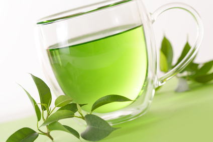

Beneficios Té Verde
Propiedades y beneficios del té verde
El té verde es una de las bebidas que más beneficios aporta al ser humano. Entre algunas de las propiedades que se le atribuyen -muchas de ellas comprobadas científicamente- se encuentran la de ser antioxidante, bueno para perder peso y hasta incluso para la dentadura. Conoce más sobre esta gran infusión.

Estos son algunas de las más importantes propiedades y beneficios que tiene el té verde:
El té verde se destaca por ser uno de los más poderosos antioxidantes. Su alto contenido de catequinas e isoflavonas lo transforman en un perfecto aliado para luchar contra el envejecimiento, colaborar con la circulación y evitar el endurecimiento de las paredes arteriales, entre muchas otras cosas.
El té verde sería anticancerígeno. Ya son muchas las investigaciones favorables que hablan sobre el tema y se cree que esto se debería también, a su gran contenido de antioxidantes. Por ejemplo, el té verde sería el responsable de la baja tasa de cáncer en Asia, también bueno para la próstata y asimismo se lo indica como bueno para la prevención de varios tipos de cáncer.
Se cree firmemente que el té verde para perder peso puede llegar a resultar muy efectivo. De hecho, hay investigaciones que determinaron que reduce la acumulación de grasa en el hígado y que es un buen agente de termogénesis.
El té verde tiene capacidades estimulantes, ya que posee cafeína y ayuda a la concentración y el trabajo mental.
Puedes encontrar más información en http://www.nlm.nih.gov/medlineplus/spanish/druginfo/natural/960.html